P66M-D [MT WM] ➭ TRANSMISSION/TRANSAXLE ➭ MANUAL TRANSMISSION ➭ REVERSE GEAR COMPONENT AND 3RD/4TH GEAR COMPONENT ASSEMBLY
REVERSE GEAR COMPONENT AND 3RD/4TH GEAR COMPONENT ASSEMBLY
d5e051117040m03
1. Assemble in the order indicated in the table.
|
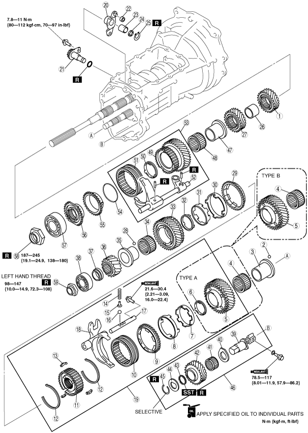 h5e511bm002 |
|
1 |
3rd gear |
|---|---|
|
2 |
Steel ball |
|
3 |
Needle bearing inner race (See 3rd Gear Bearing Inner Race Assembly Note.) |
|
4 |
Needle bearing (See Needle Bearing Assembly Note.) |
|
5 |
3rd counter gear |
|
6 |
Friction damper |
|
7 |
Inner cone |
|
8 |
Double cone |
|
9 |
Synchronizer ring |
|
10 |
Clutch hub sleeve |
|
11 |
3rd/4th clutch hub |
|
12 |
Synchronizer key spring |
|
13 |
Synchronizer key |
|
14 |
Detent spring |
|
15 |
Spring seat |
|
16 |
Detent ball |
|
17 |
3rd/4th shift rod |
|
18 |
3rd/4th shift fork |
|
19 |
3rd/4th clutch hub component (See 3rd Counter Gear, 3rd/4th Clutch Hub Component and 3rd/4th Shift Fork Assembly Note.) |
|
20 |
Counter lever |
|
21 |
Counter lever shaft component (See Counter Lever Shaft Assembly Note.) |
|
22 |
Bush |
|
23 |
Needle bearing |
|
24 |
Spacer |
|
25 |
Retaining ring |
|
26 |
Spacer |
|
27 |
4th gear |
|
28 |
Steel ball |
|
29 |
Synchronizer ring |
|
30 |
Double cone |
|
31 |
Inner cone |
|
32 |
Friction damper |
|
33 |
4th counter gear |
|
34 |
Needle bearing |
|
35 |
Needle bearing race |
|
36 |
Reverse counter gear |
|
37 |
Collar |
|
38 |
Countershaft rear bearing |
|
39 |
Reverse idler gear shaft |
|
40 |
Thrust washer |
|
41 |
Needle bearing |
|
42 |
Reverse idler gear |
|
43 |
Friction damper |
|
44 |
Thrust washer |
|
45 |
Retaining ring |
|
46 |
Reverse idler gear component (See Reverse Idler Gear Component Assembly Note.) |
|
47 |
Needle bearing race |
|
48 |
Needle bearing |
|
49 |
Reverse gear |
|
50 |
Friction damper |
|
51 |
Clutch hub sleeve |
|
52 |
Reverse shift fork |
|
53 |
Reverse gear, shift fork component (See Reverse Gear and Reverse Clutch Hub Component Assembly Note.) |
|
54 |
Synchronizer key spring |
|
55 |
Synchronizer ring |
|
56 |
Reverse synchronizer cone |
|
57 |
Mainshaft rear bearing (See Mainshaft Rear Bearing and Countershaft Rear Bearing Locknut Assembly Note.) |
|
58 |
Locknut (See Mainshaft Rear Bearing and Countershaft Rear Bearing Locknut Assembly Note.) |
|
59 |
Locknut (See Mainshaft Rear Bearing and Countershaft Rear Bearing Locknut Assembly Note.) |
3rd Gear Bearing Inner Race Assembly Note
1. Install the steel ball to the countershaft.
|
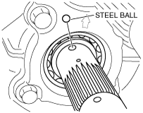 e5u511bm5032 |
2. Align the ball groove position of the 3rd gear bearing inner race and assemble it to the countershaft.
Note• There are two types of needle bearings depending on whether the friction damper is equipped or not.
|
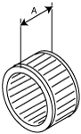 h5e511bm003 |
Dimension A
Type A (with friction damper) : 23.6 mm {0.929 in}
Type B (without friction damper) : 30.6 mm {1.20 in}
3rd Counter Gear, 3rd/4th Clutch Hub Component and 3rd/4th Shift Fork Assembly Note
1. Assemble the 3rd drive gear and 3rd/4th clutch hub component.
Caution• Be sure to assemble the clutch hub components and synchronizer ring components while aligning the synchronizer ring grooves with the synchronizer keys.
• The standard synchronizer key dimensions are as follows:
|
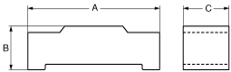 a6e5110m131 |
mm {in}
|
A |
B |
C |
|
|---|---|---|---|
|
5th/6th |
17.0 {0.670} |
4.25 {0.167} |
5.0 {0.197} |
• Be sure to align the synchronizer ring projections with the inner cone notches.
• Be sure to assemble the gears and the synchronizer ring components while aligning the double cone projections with the gear holes as shown in the figure.
• Align the friction damper projections with the clutch hub grooves.
|
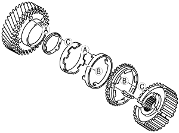 e5u511bm5057 |
• Align the clutch hub sleeve alignment mark with the clutch hub synchronizer key installation position and assemble.
|
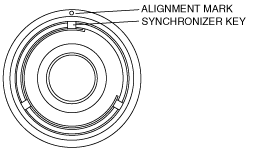 e5u511bm5058 |
2. Assemble the 3rd counter gear component, 3rd/4th clutch hub component, and 3rd/4th shift fork component as a single unit.
|
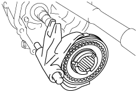 e5u511bm5018 |
3. Install the 3rd/4th shift rod retaining bolt.
|
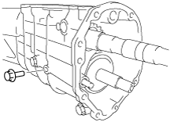 e5u511bm5017 |
Tightening torque:
21.6—30.4 N·m {2.21—3.09 kgf·m, 16.0—22.4 ft·lbf}
Counter Lever Shaft Assembly Note
• If the locknut is loosened to replace the counter lever shaft or lock plate, assemble the counter lever shaft using the procedure for "Locknut is loosened". (See Locknut is loosened.)
• If the locknut is not loosened, assemble the counter shaft component using the procedure for "Locknut is not loosened". (See Locknut is not loosened.)
1. Assemble the counter lever shaft to the transmission (counter lever).
2. Assemble the lock plate to the counter lever shaft.
|
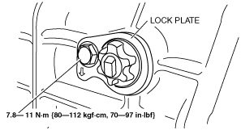 GHG0517M5009 |
3. Apply sealant (TB2440B) to the thread area of the locknut.
Caution• Assemble the counter lever shaft with the chamfer of the counter lever shaft end facing upright, otherwise a malfunction will occur in the 3rd/4th shift stroke.
4. Tighten the locknut with the chamfer of the counter lever shaft end facing upright as shown in the figure.
|
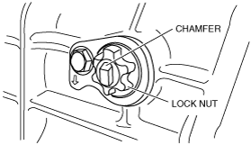 GHG0517M5008 |
Tightening torque:
38—51 N·m {3.81—5.29 kgf·m, 27.6—38.2 ft·lbf}
5. After assembling the transmission, verify the 3rd/4th shift stroke.
• If there is a malfunction in the shift stroke, perform the following procedure.
(1) Loosen the locknut and remove the sealant remaining on the locknut and counter lever shaft.
(2) Apply sealant (TB2440B) to the thread area of the locknut.
(3) Tighten the locknut with the chamfer of the counter lever shaft end facing upright as shown in the figure.+-------------------------------------------------------+ | GHG0517M5008 | +-------------------------------------------------------+
Tightening torque:
38—51 N·m {3.81—5.29 kgf·m, 27.6—38.2 ft·lbf}
1. Assemble the counter lever shaft component to the transmission.
|
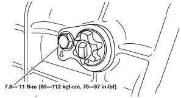 GHG0517M5007 |
2. After assembling the transmission, verify the 3rd/4th shift stroke.
• If there is a malfunction in the shift stroke, perform the following procedure.
(1) Loosen the locknut and remove the sealant remaining on the locknut and counter lever shaft.
(2) Apply sealant (TB2440B) to the thread area of the locknut.
(3) Tighten the locknut with the chamfer of the counter lever shaft end facing upright as shown in the figure.+-------------------------------------------------------+ | GHG0517M5008 | +-------------------------------------------------------+
Tightening torque:
38—51 N·m {3.81—5.29 kgf·m, 27.6—38.2 ft·lbf}
4th Counter Gear, 4th Synchronizer ring, 4th Bearing Inner Race Assembly Note
1. Install the steel ball to the countershaft.
|
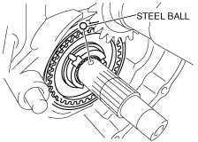 e5u511bm5035 |
2. Assemble the 4th counter gear component to the 3rd/4th clutch hub.
Caution• Be sure to assemble the clutch hub components and synchronizer ring components while aligning the synchronizer ring grooves with the synchronizer keys.
• Be sure to align the synchronizer ring projections with the inner cone notches.
• Be sure to assemble the gears and the synchronizer ring components while aligning the double cone projections with the gear holes as shown in the figure.
• Align the friction damper projections with the clutch hub grooves.
|
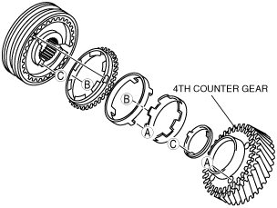 e5u511bm5062 |
3. Align the ball groove position of the 4th counter gear bearing inner race and assemble it to the countershaft.
Reverse Idler Gear Component Assembly Note
1. Using the SST, install the friction damper to the reverse idler gear.
|
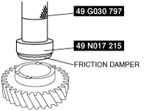 g5u511bms038 |
• Verify the depth of the friction damper installation position.
|
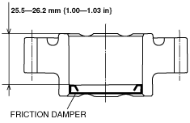 e5u511bm5088 |
2. Assemble the reverse idler gear component.
3. Measure the clearance between the retaining ring and thrust washer.
|
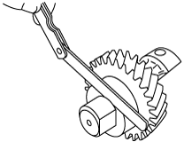 e5u511bm5039 |
• If not within the specification, adjust by choosing the proper retaining ring.
Reverse idler gear end play
0.1—0.2 mm {0.0040—0.0078 in}
Reverse idler gear retaining ring
|
Thickness (mm {in}) |
|---|
|
1.5 {0.059} |
|
1.6 {0.063} |
|
1.7 {0.067} |
|
1.8 {0.071} |
|
1.9{0.075} |
4. Install the reverse idler gear component to the transmission case.
|
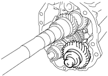 e5u511bm5070 |
5. Install the reverse idler gear shaft retaining bolt.
|
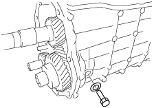 e5u511bm5015 |
Tightening torque
78.5—117 N·m {8.01—11.9 kgf·m, 57.9—86.2 ft·lbf}
Reverse Gear and Reverse Clutch Hub Component Assembly Note
1. Assemble the reverse gear and clutch hub sleeve.
Caution• Align the clutch hub sleeve alignment mark with the deepened valley of the reverse gear spline, and assemble them so that the synchronizer teeth are facing outward
|
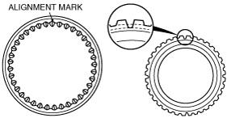 e5u511bm5061 |
2. Assemble the reverse gear, clutch hub sleeve and shift fork as a single unit.
|
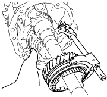 e5u511bm5040 |
Mainshaft Rear Bearing and Countershaft Rear Bearing Locknut Assembly Note
1. Slide the 5th/6th and 1st/2nd clutch hub sleeves to lock the transmission into 5th and 2nd gears.
|
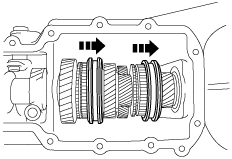 e5u511bm5011 |
2. Insert the mainshaft rear bearing into the mainshaft and install the locknut.
3. Attach the SST to the locknut and tighten the nut to the specified torque.
Caution• Attach the SST with the locknut seated in the bearing.
|
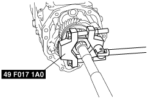 e5u511bm5012 |
Tightening torque:
187—245 N·m {19.1—24.9 kgf·m, 138—180 ft·lbf}
4. Tighten the countershaft locknut in the counterclockwise direction.
|
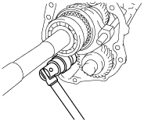 e5u511bm5013 |
Tightening torque:
98—147 N·m {10.0—14.9 kgf·m, 72.3—108 ft·lbf}
5. Using the pin punch, stake the mainshaft rear bearing locknut.
|
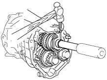 e5u511bm5042 |
6. Using the pin punch, stake the countershaft rear bearing locknut.
|
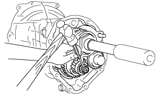 e5u511bm5089 |